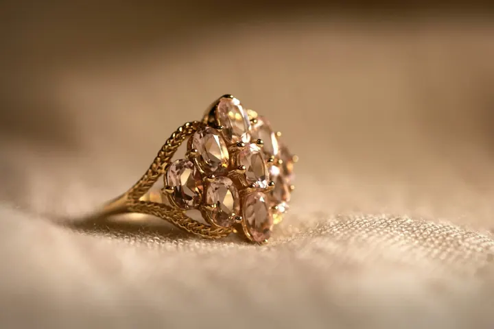
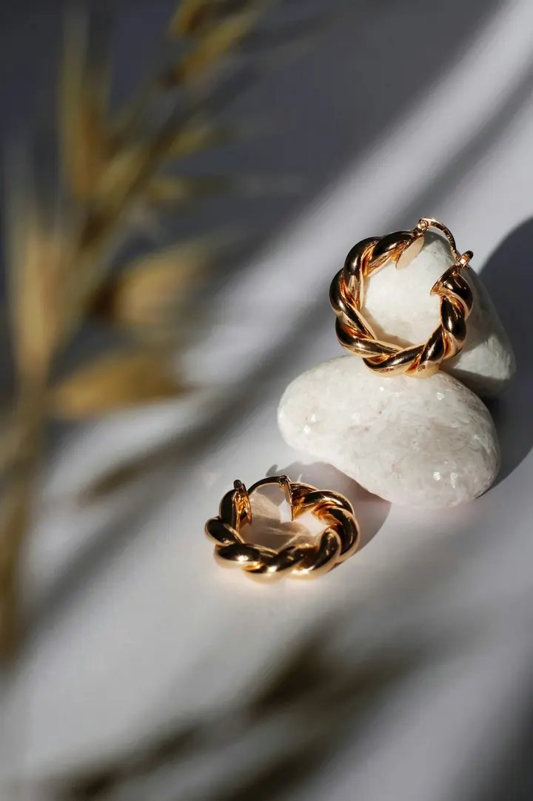
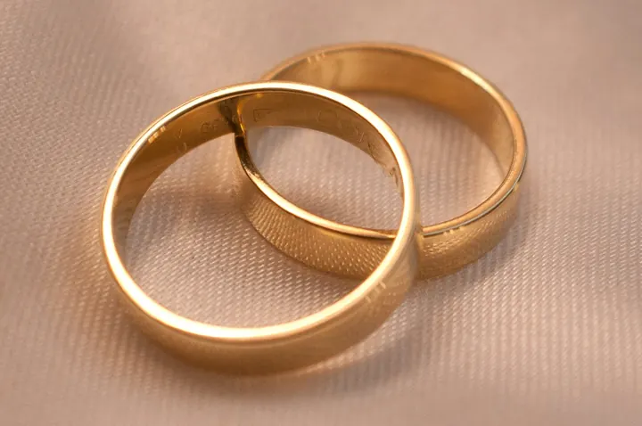
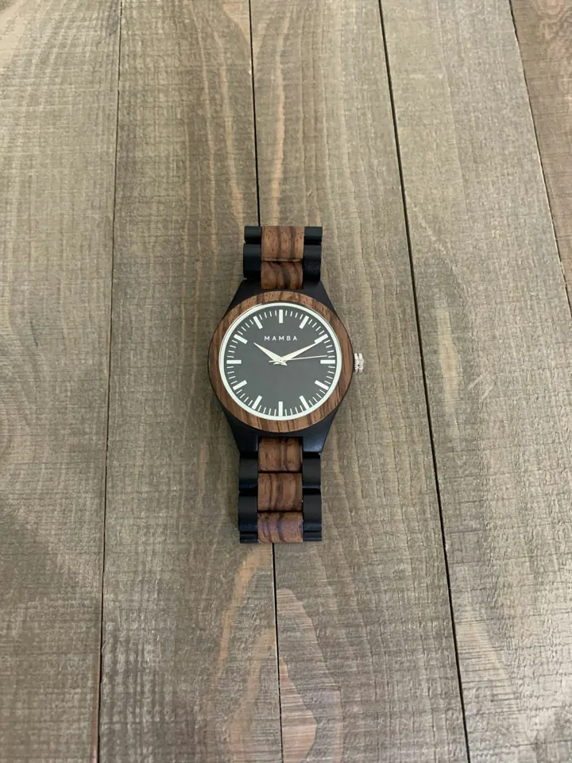
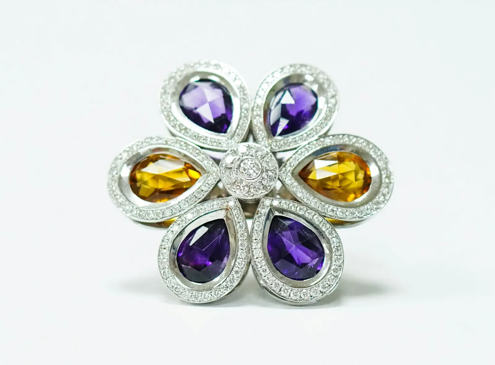
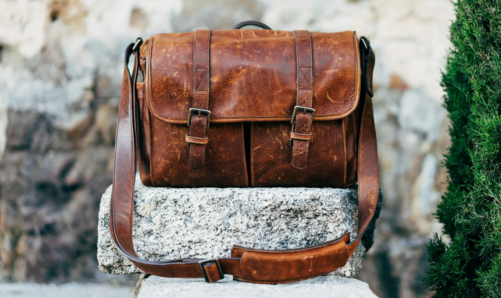

Our Story
A small studio, a long view.
Maison Aurelle began in 2009 at a single jeweller’s bench. Today a team of seven makes every ring, watch and strap under one roof.

Since 2009
Made slowly, on purpose.
We believe the most luxurious thing an object can be is honest. So we work in small numbers, with materials we can trace, and techniques that take time.
Our goldsmiths, watchmaker and leather artisan share one bench. A ring’s setting informs a watch’s lugs; a strap’s stitch echoes a band’s milgrain. The result is a collection that feels like it was made by one hand — because, in a sense, it was.
The Studio
Inside the atelier.
Natural light, a north-facing bench and the quiet hum of a timing machine — where every Aurelle piece is made.




Craftsmanship
From sketch to wrist.
Four steps, dozens of hours, one pair of hands from start to finish.



Every piece begins as a pencil sketch at the bench — proportions refined until they feel inevitable.
Stones are hand-set under the loupe, each claw shaped and polished individually.
Movements are cased, regulated in five positions and tested for seven days.
Leathers are cut, edge-painted in layers and saddle-stitched by hand with waxed linen.
Traceable materials
Recycled gold, conflict-free stones and vegetable-tanned leathers from tanneries we visit.
Made to order
Most pieces are made for you after you order — nothing sits in a warehouse.
Lifetime care
Complimentary cleaning, sizing and strap re-stitching for as long as you own the piece.